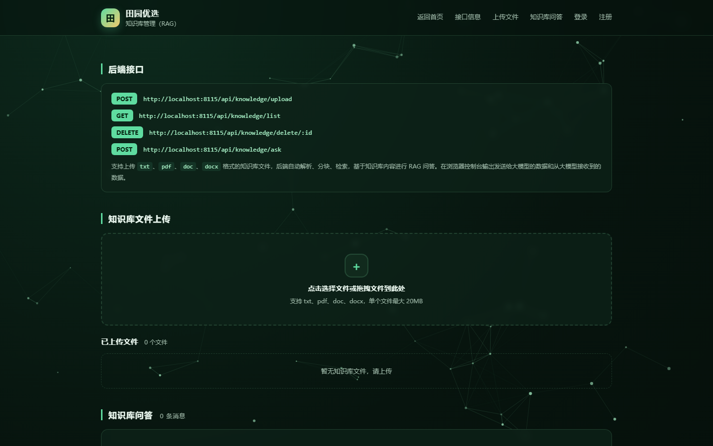

前台功能 · 05
知识库管理
上传文档构建知识库，列出已入库文件，并基于检索增强生成回答课程相关问题。
knowledge.html

页面说明
页面上半部分是文件上传与已入库文件列表，支持上传与删除；下半部分是提问区，提交问题后由后端检索相关片段并调用模型生成回答。
回答区会展示引用来源片段，方便判断答案是否来自知识库内容，而不是模型的自由发挥。
功能要点
- 文档上传与向量化入库
- 已入库文件列表与删除
- 基于检索增强的问答
- 引用来源展示
- 上传与问答过程的状态提示
接口说明
| 方法 | 接口路径 | 说明 |
|---|---|---|
| POST | /api/knowledge/upload |
上传文档并写入知识库 |
| GET | /api/knowledge/list |
获取知识库文件列表 |
| DELETE | /api/knowledge/delete/:id |
删除指定知识库文件 |
| POST | /api/knowledge/ask |
基于知识库检索并生成回答 |
相关文件
knowledge.html
js/knowledge.js
backend/routes/knowledge.js